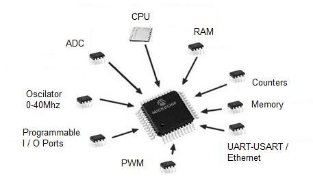
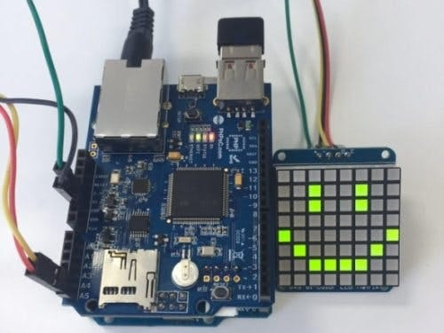

About Me
Enthusiastic about science, technology and programming. I am always looking for opportunities to expand my knowledge and apply it to innovative projects.
I plan to do research in the field of bionic prosthetics. I'm excited to explore how I can contribute to this field in my next terminal project.
Technical Skills
As a Bionic Engineering student, I've acquired skills in the following areas:
- Worked with MATLAB on Neural Networks (Perceptron, Adaline, Backpropagation, Multilayer NN, Autoasociative NN, Competitive NN), Mamdani Fuzzy Logic, PID control, Signal and Image Processing.
- Worked with PYTHON on pattern recognition; speech recognition with Dynamic Time Warping, hand recognition with mediapipe, object recognition by Euclidean distance.
- Worked with programming the arduino microcontroller for the use of sensors and actuators.
- Design of filters (high pass, low pass, etc) to obtain different signals at certain frequencies.
Education
-
Interdisciplinary Professional Unit of Engineering and Advanced Technologies (UPIITA-IPN)
bachelor's degree in Bionic Engineering
2020-currently -
Center for Scientific and Technological Studies No. 10
"Carlos Vallejo Márquez "
Major: Environmental Sciences
2015-2018
Courses and Certifications
Financial Education
A diploma in financial education is a specialized program designed to provide individuals with essential knowledge and skills related to managing personal finances and making informed financial decisions.
Fundamentals of microcontroller programming
The fundamentals of microcontroller programming focuses on what a microcontroller is, its physical constitution, applications, etc.
Arduino programming and its peripherals
Arduino programming and its peripherals involve learning how to program and utilize the Arduino platform to create functional circuits.
Badges
Hobbies
Gardening
- Species identification (specifically cacti and succulents)
- Grafting
- Cultivation and Propagation
Video Games
Playing Stardew Valley and Terraria